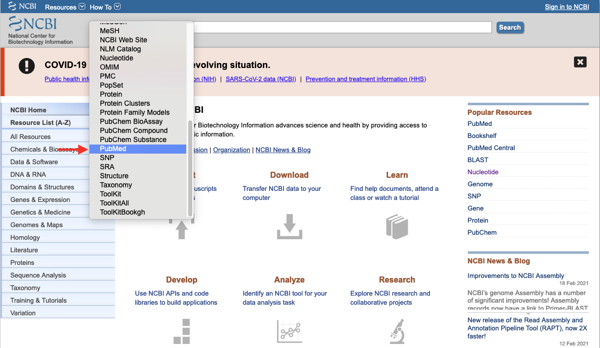
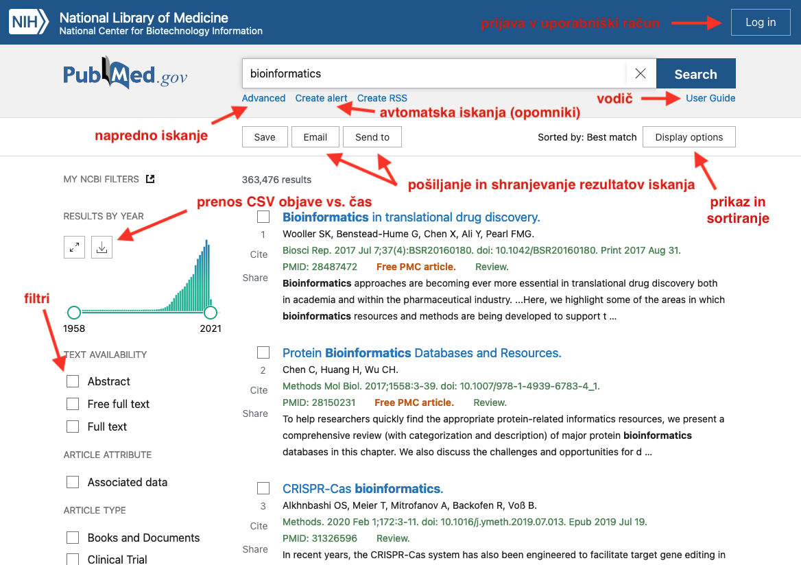

VAJA: Iskanje po PubMed¶
V okviru te vaje si bomo ogledali nekaj vidikov iskanja po tej zbirki in sicer:
filtriranje rezultatov glede na tip članka, leto ipd.,
kompleksno iskanje z večimi termini.
Pri tem bomo uporabljali “novo” verzijo vmesnika, ki je na voljo od konca leta 2019 in je dosegljiv na naslovu https://pubmed.ncbi.nlm.nih.gov/. Z iskanjem lahko začnemo tudi na osnovni strani Entrez (https://www.ncbi.nlm.nih.gov/), kjer na vrhu iz menija izberemo Pubmed (slika spodaj). Če nastavitev pustili na All Databases se nam prikažejo posamezne zbirke na strežniku in število zadetkov v vsaki izmed njih (poizkusite na enem primeru).

Naloga 1¶
Odgovorite na naslednja vprašanja:
S pomočjo enostavnega iskanja ugotovite, koliko je člankov, ki so indeksirani v tej zbirki, pri katerih se kjerkoli pojavi beseda coronavorus.
Koliko od teh člankov ima prosto dostopno celotno besedilo?
Koliko člankov je na temo kliničnih preizkusov (Clinical Trial)?
Koliko od člankov na temo kliničnih preizkusov ima prosto dostopno celotno besedilo?
Koliko člankov v zvezi s koronavirusom (še vedno smo pri iskalnem pojmu coronavirus) je preglednih (t.j. Review)?
Do zgoraj navedenih vprašanj se lahko dokopljemo z uporabo filtrov, ki se nahajajo na levi strani (slika spodaj). Še več filtrov najdemo čisto na koncu seznama filtrov pod povezavo Additional filters. Na spletni strani je še nekaj uporabnih funkcij, naj jih naštejemo zgolj nekaj:
Display options, kjer lahko nastavimo sortiranje zadetkov ter število prikazanih zadetkov na stran,
shranjevanje in pošiljanje rezultatov (npr. za uvoz v program za upravljanje referenc),
prenos datoteke formata CSV s frekvenco objav po letih (oglejte si to za primer koronavirusa!),
ustvarjanje avtomatskih iskanj, kar nam omogoča, da za neko tematiko dobimo e-pošto z novimi članki,
prijava v uporabniški račun, kjer si lahko shranjujemo bibliografijo in upravljamo z avtomatskimi iskanji.

Naloga 2¶
Zgornji primer je, ne glede na uporabljene filtre, primer enostavnega iskanja. Če želimo izvesti kompleksnejšo poizvedbo, jo lahko zapišemno neposredno v iskalno polje za enostavno iskanje, a moramo pri tem poznati sintakso. To si poenostavimo z uporabo naprednega iskanja - povezava Advanced pod osnovnim iskalnim poljem.
Graditelj naprednega iskanja (PubMed Advanced Search Builder) nam omogoča, da posameznemu iskalnemu pojmu pripišemo, kje v referenci se naj nahaja (npr. v naslovu, povzetku), določimo časovno obdobje objave ipd., vse to pa združujemo z osnovnimi operatorji Boolove algebre (AND, OR, NOT).
Vaša naloga je, da poiščete, koliko člankov ima v naslovu besedo SARS, bili so pa objavljeni med letoma 2009 in 2019 (vključno s celotnima omenjenima letoma). Koliko pa je bilo takih člankov med letoma 2020 (od 1. januarja) pa do danes?
Zanima nas še, koliko od člankov, ki ima v naslovu SARS, ima v naslovu in/ali povzetku še besedo cats (mačke).
Opazili boste, da ko gradite kompleksno iskanje se vam le-to z ustrezno sintakso zapisuje v izkalno škatlo (Query box) in ob sprožitvi iskanja se vsebina slednjega pojavi v polju za enostavno iskanje. Tako vidite, da bi dejansko lahko tako iskanje izvršili sami, če bi poznali sintakso. Orodje za gradnjo kompleksnega iskanja ima še eno uporabnost - z njim si lahko pomagamo zgraditi iskanja prek programskega dostopa.
Dodatna literatura¶
Pomoč za iskanje po PubMed, na voljo tudi v obliki PDF (poglejte ob rob strani na povezavi).
18+ Ways to Improve your PubMed searches - enostavna in uporabnikom prijazna razlaga kompleksnejših iskanj.